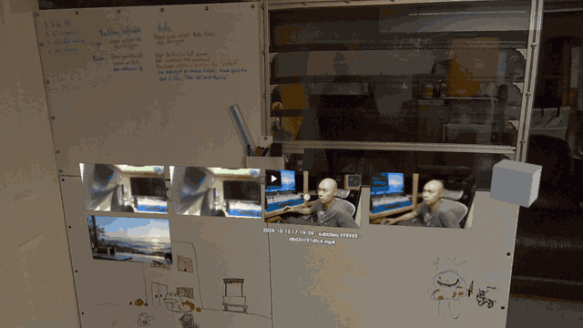
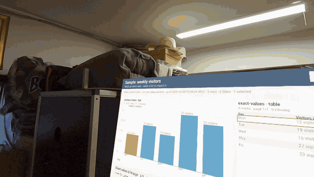
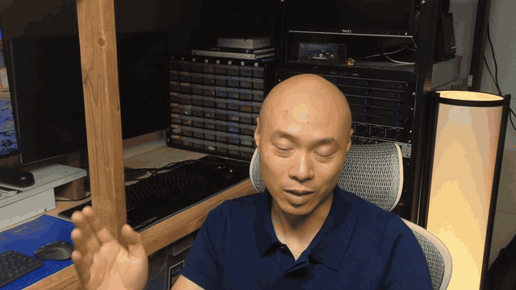
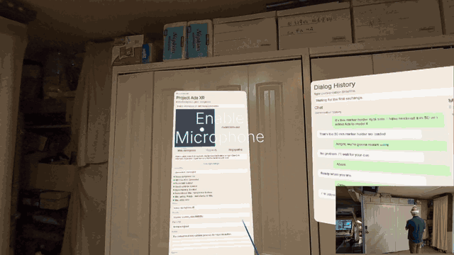
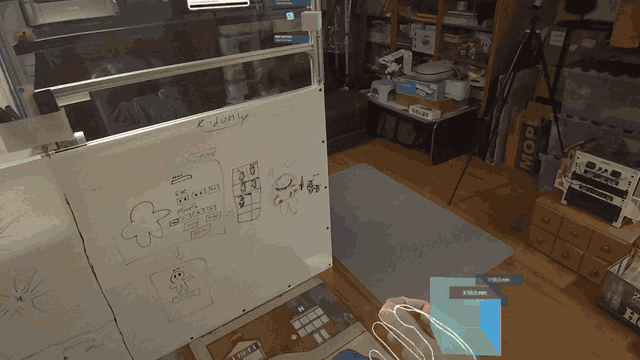
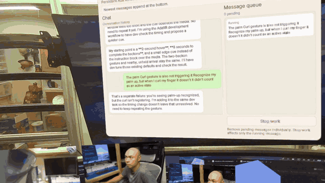
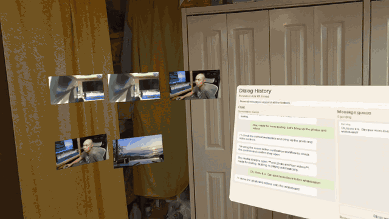
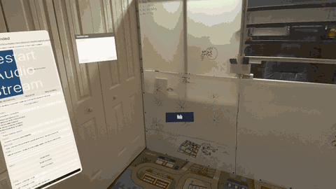

Track A
Refine content creation
Make the proven workflow deeper, faster and worth returning to.
- Fix the friction real usage exposes.
- Add templates, deeper editing and durable projects.
A new interface with technology.
An AI collaborator that shares your workspace and helps you think, create, and get things done.
What if getting things done didn’t feel like operating software? I’m exploring how conversation, gestures, and interactive visuals can make working alongside AI feel natural. This journal follows the experiments, setbacks, and discoveries as Ada takes shape.
Development timeline
A sequence of gates, not a calendar. Basic operations come first; the content workflow and MVP are earned on top. After the MVP, the roadmap splits into three parallel tracks.
Phase 1 · We are here
Make the room dependable enough to build on.
Current focus: panel save/restore · voice overlap · whiteboard placement
Phase 2
Complete one real creative job inside the room.
Phase 3
A first-time user can finish the core job in one session.
After the MVP gate — three parallel tracks
Track A
Make the proven workflow deeper, faster and worth returning to.
Track B
Test whether the same core can carry a second job.
Open decision: use case to be named.
Track C
Let several people join the same room and work with Ada together.
Builds on the single-user room gate.
Working outline, 30 October 2026. No calendar estimates are shown because the basic-operations gate is still open.

Why it matters A saved layout is only useful if the save survives the room it was saved in. The bug was 4.2e-8; the workflow failure was much larger.

Why it matters The interface is becoming a place, not a panel. A place needs a chart, a voice that can overlap, and a memory for where things belong.

Why it matters A feature is not really adopted until it can explain what happened without a special case. The same is true of a story.
Why it matters The assistant's unit of work is not a command. It is an intention with evidence that survives the next sentence.

Why it matters The demo is the integration test. Features that survive a live run with a camera and a person waiting are the ones that count.

Why it matters A collaborator should carry the thread of a task. If every follow-up command has to re-prove its target, the conversation turns into a form.

Why it matters Recognition needs a visible yes before it asks for the next gesture. The cyan outline is the handshake.

Why it matters The interesting problem is not one group-move command. It is an object model that can select a set, preserve each item’s relationship to a surface, and accept the same verbs in a group.

Why it matters A trustworthy assistant has to make failure legible. The work that mattered today was keeping the failed request, the unclosed worker and the bad move visible enough to repair.

Why it matters Working together starts to mean using the same tools: I can talk through a task from the headset while Ada operates Chrome on the Mac, with the final submission still in my hands.

Why it matters A fresh headset capture gives Ada visual context from the room I'm in, so our conversation can refer to what I'm seeing as well as what I'm saying.


Why it matters Hands make the room addressable: pointing at a surface is a step toward sharing what I mean with Ada, without translating everything into words.
Before the current build
I've started Ada four times over two years — roughly two months of actual building. Each attempt was unlocked by a new tool, and this is the first time the technology and timing feel right.
The third attempt started in May 2026, building a complicated WebXR-to-OpenClaw communication layer and making the first attempt at computer use.
When camera access arrived on the Meta Quest, Ada could finally see the real room.
A hackathon project powered by Gemini 1.5 first put Ada on screen.